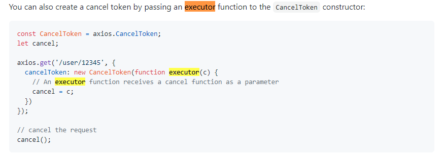
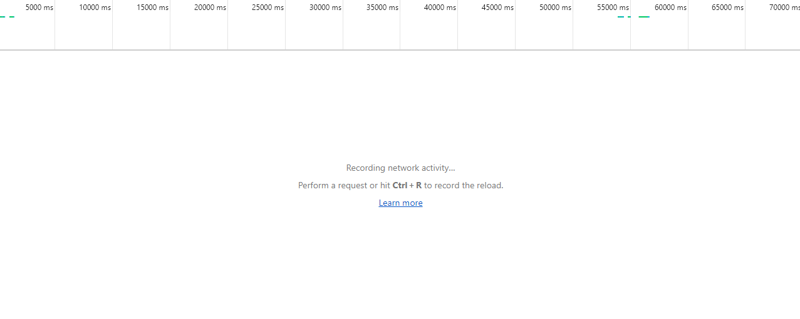

# [Axios] 如何 Cancel 已經發出的 Request?
最近收到一個很有趣的需求：希望我們取消已經發出但是未獲得 Response 的 Request 。
因此基於圓滿完成任務後，必須留下痕 (紀) 跡 (錄) 的精神，決定來寫一下這篇。
# CancelToken
Axios 在 v0.15 版本之後就已經支援了基於 cancelable promise proposal 的 Cancelable 功能，因此目前我們使用的 Axios 應該都擁有這項能力才是。
查找 Axios 的 Document 後，了解其 cancel request 的思路其實也很單純。
- 使用 CancelToken.source ( ) 產生 cancel instance，其中包含一個 unique token。
- 當 axios 要 send request 前，我們就在 option 中加上這個 token 作為 axios 的識別。
- 當我們要 cancel 的時候，僅需要利用
source.cancel()即可達到目標。
p.s. 一個 cancel token 可以 cancel 多個 request.
以 github 上 axios 的範例來說，程式碼可以寫成這樣。
1
2
3
4
5
6
7
8
9
10
11
12
13
14
15
16
17
18
19
20
21
22
23
24// 生成 CancelToken 的 instance 命名為 source.
const CancelToken = axios.CancelToken;
const source = CancelToken.source();
axios.get('/user/12345', {
cancelToken: source.token // 將 source 的 unique token 加入 request，作為 cancel 的識別
})
.catch(function (thrown) {
// 如果 request 被啟動 cancel ，則做一些 canceled 的處理。
if (axios.isCancel(thrown)) {
console.log('Request canceled', thrown.message);
} else {
// handle error
}
});
// post 一樣可以進行 cancel ，只是 options 變成放在第三個位置。
axios.post('/user/12345', { name: 'new name' }, {
cancelToken: source.token
})
// cancel the request (the message parameter is optional)
source.cancel('Operation canceled by the user.');
# 在 interceptors 中使用 CancelToken
在實務上，我們通常會先使用 axios create 一個客製化的 instance，再用 instance.interceptors.request / instance.interceptors.response 攔截 ajax 的 request, response 。
這種情況下，我們該怎麼做才能將 cancelToken 加入至生成的 instance 呢？
依照 Document 中的範例:

我們可以 callback function 的方式將 cancel function reference 出來。
所以我們就可以將原本的 instance 改成以下的寫法。
1
2
3
4
5
6
7
8
9
10
11
12
13
14
15
16
17
18
19
20import axios from 'axios';
const CancelToken = axios.CancelToken;
let cancelFunc;
axios.interceptors.request.use((config) => {
if (cancelFunc) cancelFunc(); // cancel request
// generate the cancel token instance to the request.
// And reference the cancelFunc to the callback function `c`.
config.cancelToken = new CancelToken(function executor(c) {
cancelFunc = c;
})
return config
}, function (error) {
return Promise.reject(error)
});
甚至再進階一點，我們創建一個 request pool 蒐集所有的 request ，使其每當有相同的 request 被重複發送，就 cancel 掉上一個未回來的 request。
1
2
3
4
5
6
7
8
9
10
11
12
13
14
15
16
17
18
19
20
21
22
23
24
25
26
27
28
29
30
31
32
33
34
35
36
37
38
39
40
41
42
43
44
45
46
47
48
49
50
51
52
53
54
55
56
57
58
59
60
61
62
63
64
65
66// 引用 axios 的 cancelToken
const CancelToken = axios.CancelToken
// 建立一個 request pool
const requestPool = /** @type { {[url: string]: import('axios').Canceler } } */ ({})
// create an axios instance
const service = axios.create({
baseURL: process.env.VUE_APP_BASE_API, // url = base url + request url
// withCredentials: true, // send cookies when cross-domain requests
timeout: 300000 // request timeout
})
// request interceptor
service.interceptors.request.use(config => {
// cancel 掉 request pool 中相同的 requst.
// hint. 若 pool 中的 request 上已經 response, cancel 的 call 不會生效。
if (requestPool[config.url]) {
const cancel = requestPool[config.url]
delete requestPool[config.url]
cancel(JSON.stringify({ status: 'cancel', message: 'Cancel repeated request:' + config.url }))
}
// 將新的 request 的 cancel 覆蓋掉舊的 cancel request.
config.cancelToken = new CancelToken(function executor (c) {
requestPool[config.url] = c
})
return config
},
error => {
// do something with request error
console.log(error) // for debug
return Promise.reject(error)
}
)
// response interceptor
service.interceptors.response.use(
/**
* If you want to get http information such as headers or status
* Please return response => response
*/
/**
* Determine the request status by custom code
* Here is just an example
* You can also judge the status by HTTP Status Code
*/
response => {
return response.data
},
error => {
if (!IsJsonString(error.message)) {
return Promise.reject(error)
}
const errMsg = JSON.parse(error.message)
if (errMsg.status === 'cancel') return console.warn(errMsg.message)
}
)
接下來我們就可以來嘗試看看是否真的有生效 (cancel 掉前面的 request)

至此，我們就完美達成了需求啦～！
可喜可賀！ 可喜可賀！